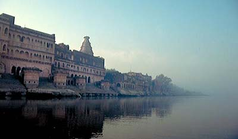
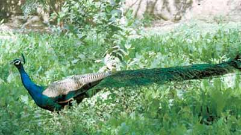

Kartikka: Season of Mists and Mellow Pilgrimage
Autumn inspires poetry: with its delicate morning mists and dew-spangled spiders-webs; golden sunshine and the smell of bonfires and autumn leaves. In Celtic lore, this is the season when the veil between this world and the ‘other’ is thinner than normal.
For Vaisnavas, the charms of autumn are enhanced by the season of Karttika: the lunar month that falls across October and November. This month is described as especially dear to Krishna, and Vaisnavas keep it sacred to acts of devotion and vows of austerity aimed at increasing their spiritual strength and drawing closer to Krishna.
Devotees of Krishna may vow to rise earlier; to chant the Lord’s names more frequently; to spend more time reading scripture; to eat less, or more simply. They also observe the daily offering of a lighted candle or ghee-lamp to Krishna, while singing the Damodarastaka prayers, which celebrate one of the most loved of Krishna’s pastimes.
Several of the more sublime festivals fall in this period: the celebration of Krishna’s rasa-lila (dancing with the gopis), and the appearance-day of Sri Radha-kunda, for example, as well as Govardhana-puja. Karttika is a mixture of austerity and sweetness, as devotees try to lessen their bodily needs, while correspondingly spending more time with Krishna.
Many Vaisnavas from all over the world set off on pilgrimage to Vrindavana, the land of Krishna, at this time. At ISKCON’s Krishna-Balarama temple in Vrindavana, guest-houses and living-quarters strain at the seams as throngs of devotees arrive for Karttika. Leaving their ordinary lives behind for a few weeks, the pilgrims visit the sacred sites of Krishna’s pastimes and take part in the lively kirtan (chanting) parties, at the temple. It’s worth the effort just to be able to chant and dance in such huge numbers; families in particular find this a good time to be together in a spiritual atmosphere, away from school and jobs. Children enjoy the kirtans and the offering of lights which is beautiful when seen in mass like this.